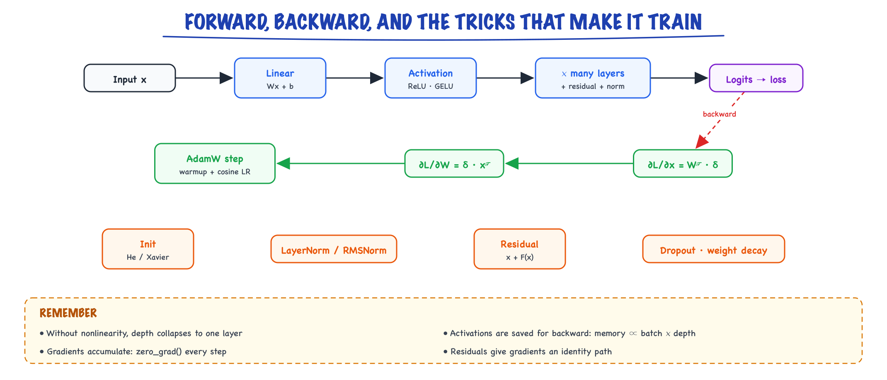
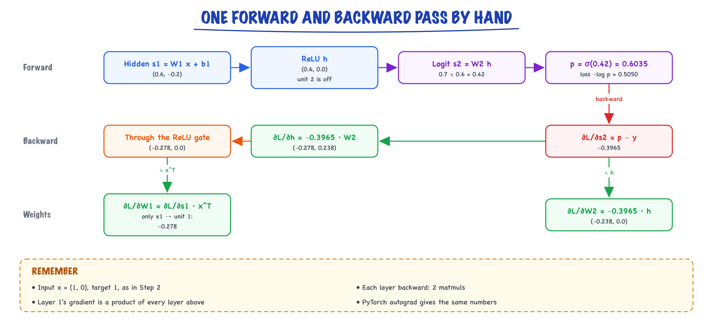

Neural networks // Math & ML foundations
Layers, activations, backprop, initialization, optimizers, schedules, normalization and residuals.
01 — At a glance

A network is stacked linear layers with nonlinearities. Backprop runs the chain rule in reverse; init, AdamW, schedules, normalization and residuals keep deep stacks trainable.
02 — New words
| Word | Meaning |
|---|---|
| Neuron / unit | One weighted sum of inputs plus a bias, passed through an activation function. |
| Layer | Many units computed together: a matrix multiply, a bias add, then an activation. Turns one vector into another. |
| MLP | Multi-layer perceptron: layers stacked so each one's output is the next one's input. The feed-forward block inside every transformer is one. |
| Activation function | The non-linear function applied after each weighted sum, such as ReLU, GELU or sigmoid. Without it, stacked layers collapse into one. |
| Backpropagation | Computing every weight's gradient by applying the chain rule from the loss backwards through each layer. |
| Vanishing / exploding gradients | Gradients shrinking toward zero or growing without bound as they pass back through many layers, so early layers learn nothing or training blows up. |
| Initialisation | The random starting values of the weights. Their scale decides whether signals survive many layers. |
| Optimiser | The rule that turns gradients into weight updates: SGD, SGD with momentum, Adam, AdamW. |
| Learning-rate schedule | How the step size changes during training, typically a short warmup followed by a slow decay. |
| LayerNorm / RMSNorm | Rescaling each vector to a standard spread (and, for LayerNorm, zero mean) inside the network so every layer sees well-sized inputs. |
| Residual connection | Adding a layer's input to its output, \(h + f(h)\), giving gradients a direct path back through the network. |
| Dropout | Randomly zeroing a fraction of activations during training so the network cannot depend on any single unit. |
The lesson
03 — The question
A neural network is a function built from many small, simple pieces: weighted sums and non-linear functions, stacked in layers. Each piece is differentiable, so the whole stack can be trained with the gradient descent from The math you need. Every LLM is such a network. The interesting questions are not what a layer is but why stacking them works at all, and why it took a decade of tricks (better activations, initialisation, optimisers, normalisation, residual connections) before networks dozens of layers deep could be trained reliably.
What interviewers ask:
- Why do neural networks need non-linear activation functions?
- Walk me through backpropagation for one layer. What are vanishing gradients, and what fixed them?
- Why Adam rather than plain SGD, and what does the "W" in AdamW change?
- Why do transformers use residual connections and LayerNorm?
The running example is the smallest problem a linear model cannot solve: XOR. Two yes/no inputs, and the output is 1 when exactly one of them is 1. Think of a ticket router that should page an engineer when exactly one of two monitoring checks fails (both failing means a known outage already being handled; neither failing means nothing to do). The four cases:
| \(x_1\) | \(x_2\) | target |
|---|---|---|
| 0 | 0 | 0 |
| 0 | 1 | 1 |
| 1 | 0 | 1 |
| 1 | 1 | 0 |
We will solve it with a tiny network, compute one forward and backward pass by hand, then make the network deep and watch every problem that the modern toolkit exists to fix. All numbers come from running the code.
04 — Step 1: why one layer is not enough, and why non-linearity
Logistic regression draws one straight line through the input space and puts "1" on one side. No line separates XOR's positive corners (0,1) and (1,0) from the negative ones (0,0) and (1,1). Trained to convergence, logistic regression on XOR ends with every weight at zero and predicts 0.5 for all four inputs, with log-loss \(\log 2 = 0.693\): it gives up.
The fix is to first transform the inputs into new features where a line does work. A hidden layer with two ReLU units, where \(\mathrm{ReLU}(s) = \max(0, s)\), does it with hand-picked weights:
\[ h_1 = \mathrm{ReLU}(x_1 + x_2), \qquad h_2 = \mathrm{ReLU}(x_1 + x_2 - 1), \qquad \text{output} = h_1 - 2h_2 \]For (0,0): \(h = (0, 0)\), output 0. For (0,1) and (1,0): \(h = (1, 0)\), output 1. For (1,1): \(h = (2, 1)\), output \(2 - 2 = 0\). Exactly XOR. The hidden layer has bent the input space so that the final, linear layer can separate it.
The bend comes entirely from the ReLU. Remove it and the network computes \(W_2(W_1 x)\), which equals \((W_2 W_1)x\): one matrix, one linear map, no more powerful than logistic regression however many layers you stack. Non-linear activations are what make depth add expressive power. With enough hidden units, a two-layer network with a non-linearity can approximate any reasonable function (the universal approximation result); depth makes many functions far cheaper to represent than width alone.
05 — Step 2: the forward pass, with numbers
Training does not start from good weights; it starts from arbitrary ones. Take a 2-2-1 network (2 inputs, 2 hidden ReLU units, 1 output) with these starting values:
\[ W_1 = \begin{bmatrix} 0.5 & -0.4 \\ 0.3 & 0.8 \end{bmatrix},\quad b_1 = [0.1,\ -0.5],\quad W_2 = [0.7,\ -0.6],\quad b_2 = 0 \]The output passes through a sigmoid, \(\sigma(s) = 1/(1 + e^{-s})\), to give a probability, and the loss is log-loss (binary cross-entropy). Feed the input \(x = (1, 0)\), whose target is 1:
| Quantity | Computation | Value |
|---|---|---|
| Hidden pre-activation \(s_1 = W_1 x + b_1\) | \((0.5 + 0.1,\ 0.3 - 0.5)\) | (0.6, −0.2) |
| Hidden activation \(h = \mathrm{ReLU}(s_1)\) | negative becomes 0 | (0.6, 0.0) |
| Output logit \(s_2 = W_2 h + b_2\) | \(0.7 \times 0.6 - 0.6 \times 0\) | 0.42 |
| Probability \(p = \sigma(s_2)\) | 0.6035 | |
| Loss \(-\log p\) | 0.5050 |
A layer is exactly this: matrix multiply, add bias, apply activation. In a real network the vectors are thousands wide and a whole batch of inputs is processed at once as a matrix, but each layer is still those three operations.
06 — Step 3: backpropagation, one layer at a time
Backpropagation computes how the loss changes with every weight by walking backwards, applying the chain rule at each operation and reusing the result from the step before.
- Output logit. For sigmoid plus log-loss, \(\partial \mathcal{L}/\partial s_2 = p - y = 0.6035 - 1 = -0.3965\). (The same "predicted minus actual" as softmax with cross-entropy.)
- Output weights. \(s_2 = W_2 h + b_2\), so \(\partial \mathcal{L}/\partial W_2 = -0.3965 \times h = (-0.238,\ 0.0)\) and \(\partial \mathcal{L}/\partial b_2 = -0.3965\). The second weight gets no gradient because its input \(h_2\) was 0 on this example.
- Hidden activations. Pass the gradient back through \(W_2\): \(\partial \mathcal{L}/\partial h = -0.3965 \times W_2 = (-0.278,\ 0.238)\).
- Through the ReLU. ReLU's derivative is 1 where its input was positive and 0 where it was negative. Unit 1 was active (0.6), unit 2 was not (−0.2), so \(\partial \mathcal{L}/\partial s_1 = (-0.278,\ 0.0)\). The ReLU acts as a gate: an inactive unit passes no gradient back.
- Hidden weights. \(\partial \mathcal{L}/\partial W_1 = (\partial \mathcal{L}/\partial s_1)\, x^{\top}\), an outer product: only the entry connecting \(x_1\) to unit 1 is non-zero, −0.278.

The 2-2-1 network on input (1, 0) with target 1: forward to the loss, then back through the output weights and the ReLU gate, which passes no gradient to the unit that was off.
PyTorch's autograd produces identical numbers (the code at the end checks this). Two lessons generalise. First, each layer's backward step is two matrix multiplies, one for its weights' gradient and one for the gradient it passes down, so a backward pass costs about twice a forward pass. Second, the gradient reaching layer 1 is a product of factors from every layer above it: weights and activation derivatives. Multiply many factors below 1 and it vanishes; many above 1 and it explodes. That product is the root of most of what follows.
A practical consequence of step 4: a unit whose input is negative for every training example never receives gradient and never recovers. These are dead ReLUs. They are one motivation for activations with a non-zero slope for some negative inputs (Leaky ReLU, and the smooth GELU and SiLU); transformers use GELU or SiLU mainly because they train slightly better in practice, and avoiding dead units is part of that.
07 — Step 4: activation functions and vanishing gradients
Early networks used the sigmoid (or tanh) between layers. The sigmoid's derivative is \(\sigma(s)(1 - \sigma(s))\), which is at most 0.25 (at \(s = 0\)) and near zero once \(|s|\) is a few units. Through 20 sigmoid layers, even in the best case, the gradient picks up a factor of at most \(0.25^{20} \approx 9 \times 10^{-13}\).
Measured on a 20-layer network 512 units wide: with sigmoid activations, the gradient norm of the first layer's weights is \(3.8 \times 10^{-14}\) while the last layer's is 0.12. The early layers effectively do not train. Swap to ReLU with a matched initialisation (Step 6) and the first layer's gradient norm is 1.2, the last 2.2: the signal arrives intact.
| Activation | Shape | Where you see it |
|---|---|---|
| Sigmoid | Squashes to (0, 1), saturates at both ends | Output layer for yes/no probabilities; gates in LSTMs. Not between hidden layers. |
| Tanh | Squashes to (−1, 1), saturates | Older RNNs |
| ReLU | 0 for negatives, identity for positives | CNNs, most MLPs. Cheap; derivative 1 when active. |
| GELU / SiLU (Swish) | Smooth ReLU with a small negative dip | Transformer feed-forward blocks (GELU in GPT-2 and BERT, SiLU inside SwiGLU in Llama-style models) |
08 — Step 5: more units make training easier, not just the model bigger
We know a 2-hidden-unit network can solve XOR (Step 1). Does training find that solution? Train 2-unit, 4-unit and 16-unit networks from 20 different random starting points each, with the same optimiser and steps:
| Hidden units | Runs that solved XOR | Median final loss |
|---|---|---|
| 2 | 5 of 20 | 0.48 |
| 4 | 12 of 20 | 0.00006 |
| 16 | 20 of 20 | 0.000004 |
With 2 units, most runs get stuck: a unit dies (Step 3) or both units settle on the same feature. With 16, there are many weight settings that solve the task, and gradient descent finds one from almost anywhere. This is a general and somewhat counter-intuitive fact: over-parameterised networks are easier to optimise, and with sensible regularisation they still generalise. It is part of why modern models have far more parameters than a classical statistician would expect to need.
09 — Step 6: initialisation keeps signals the right size
Now make the network deep: 50 ReLU layers, each 512 wide, fed inputs with standard deviation 1. What happens to the spread of the activations depends entirely on the scale of the random starting weights:
| Weight standard deviation | Activation std after 50 layers |
|---|---|
| 1.0 | Explodes: 13 after layer 1, 216 after layer 2, about 800,000 after layer 5; it passes the 32-bit float maximum after about 33 layers and ends as inf/NaN |
| 0.01 | \(1.0 \times 10^{-40}\): vanished |
| \(1/\sqrt{512} = 0.044\) (Xavier) | \(2.2 \times 10^{-8}\): vanished more slowly |
| \(\sqrt{2/512} = 0.0625\) (He) | 0.54: preserved, give or take random variation |
The reasoning is short. A unit sums \(n\) inputs (the fan-in) times weights. If inputs and weights are independent with variances \(v_x\) and \(v_w\), the sum has variance \(n\, v_w\, v_x\). To keep the variance constant from layer to layer, set \(v_w = 1/n\); that is Xavier initialisation, correct for activations symmetric around zero like tanh. ReLU zeroes half its inputs, halving the variance, so it needs \(v_w = 2/n\): He initialisation. Each layer with Xavier and ReLU multiplies the variance by one half, and \(0.5^{50}\) predicts a standard deviation of \(\sqrt{0.5^{50}} \approx 3 \times 10^{-8}\), close to what we measured.
The same product governs the backward pass, so a good initialisation keeps gradients well-sized too. Transformers add another layer of defence (Step 9), which is why they can use a simple small constant standard deviation such as 0.02 in practice.
10 — Step 7: optimisers, from SGD to AdamW
Plain SGD (stochastic gradient descent) updates \(w \leftarrow w - \eta g\) using the mini-batch gradient \(g\). Its weakness is the elongated loss bowl from Classical ML: one learning rate must suit every direction. On the bowl \(f(a, b) = \tfrac{1}{2}(a^2 + 100\, b^2)\), started at (1, 1), the gradient is (1, 100). SGD's learning rate must stay below \(2/100 = 0.02\) or the steep \(b\) direction diverges (at 0.021 it does). At 0.019, the first step moves \(b\) from 1 to −0.9, overshooting across the valley, and \(a\) only from 1 to 0.981. Reaching \(f < 10^{-6}\) takes 343 steps.
Momentum keeps a running average of past gradients and steps along it. Oscillations across the valley cancel, consistent movement along it accumulates. With momentum 0.9 at the same learning rate: 169 steps.
Adam also divides each parameter's step by a running estimate of that parameter's typical gradient size (the root of the average squared gradient). On the first step, both coordinates move by exactly the learning rate, 0.1, whatever their gradient: (1, 1) becomes (0.9, 0.9). Every direction gets a step of sensible size, so the steep direction no longer dictates the learning rate for the shallow one. Adam at learning rate 0.1 reaches \(f < 10^{-6}\) in 82 steps. In a network with billions of parameters whose gradients differ in scale by orders of magnitude across layers, this per-parameter adaptation is why Adam is the default.
The update, for gradient \(g_t\) at step \(t\):
\[ m_t = \beta_1 m_{t-1} + (1-\beta_1) g_t,\qquad v_t = \beta_2 v_{t-1} + (1-\beta_2) g_t^2,\qquad w \leftarrow w - \eta\,\frac{\hat m_t}{\sqrt{\hat v_t} + \epsilon} \]\(m\) is the momentum (average gradient), \(v\) the average squared gradient, the hats mean a correction for both starting at zero, and typical values are \(\beta_1 = 0.9\), \(\beta_2 = 0.95\) to 0.999, \(\epsilon = 10^{-8}\).
AdamW fixes how weight decay (L2 regularisation) interacts with Adam. Adding \(\lambda w\) to the gradient means Adam's per-parameter division also rescales the decay, so parameters with large gradients are barely regularised. AdamW instead subtracts \(\eta \lambda w\) directly from the weights, separately from the adaptive step, so every weight decays at the same rate. Weight decay around 0.1 with AdamW is the standard LLM recipe.
Adam's memory bill. \(m\) and \(v\) are two extra numbers per parameter, kept in 32-bit. With bf16 weights and gradients plus an fp32 master copy, training costs about 16 bytes per parameter: 112 GB for a 7B model before any activations. That is why optimiser-state sharding exists (GPUs & scale) and why parameter-efficient fine-tuning is attractive (Fine-tuning).
11 — Step 8: learning-rate schedules
The best learning rate changes during training. Early on, the weights are random, Adam's \(v\) estimates are based on very few gradients, and large updates can push the network somewhere it never recovers from. Late in training, large steps bounce around a minimum instead of settling into it. The standard answer is linear warmup, then cosine decay. With a peak of \(3 \times 10^{-4}\), 2,000 warmup steps, 100,000 total steps and a floor of \(3 \times 10^{-5}\):
| Step | 0 | 500 | 2,000 | 26,500 | 51,000 | 75,500 | 100,000 |
|---|---|---|---|---|---|---|---|
| Learning rate | 0 | 7.5e-5 | 3.0e-4 | 2.6e-4 | 1.65e-4 | 7.0e-5 | 3.0e-5 |
The cosine spends a long time near the peak and slows down smoothly at the end. When a loss curve shows a spike in the first few hundred steps, missing or too-short warmup is the first suspect; when it plateaus early, the peak may be too low. The learning rate is the single most important hyperparameter: if you can tune only one thing, tune it, on a log scale (1e-4, 3e-4, 1e-3).
12 — Step 9: normalisation and residual connections
Initialisation sets good scales at step 0; nothing keeps them good as weights change. Two architectural pieces do, and together they made very deep networks routine.
LayerNorm rescales each vector to mean 0 and variance 1, then applies a learned scale and shift. For the vector (2.0, −1.0, 0.5, 4.5): mean 1.5, variance 4.125, normalised (0.246, −1.231, −0.492, 1.477). RMSNorm, used in most current LLMs, skips the mean subtraction and just divides by the root-mean-square (2.525 here), giving (0.792, −0.396, 0.198, 1.782). It is slightly cheaper and works as well. Either way, every layer receives inputs of a predictable size however the earlier layers drift. (BatchNorm, common in CNNs, normalises across the batch instead; it behaves badly with small batches and variable-length sequences, so transformers do not use it.)
A residual connection computes \(h_{\text{next}} = h + f(h)\) instead of \(h_{\text{next}} = f(h)\). The layer learns a correction to its input rather than a whole new representation. In the backward pass, the derivative of \(h + f(h)\) with respect to \(h\) is \(1 + f'(h)\): the "1" is a direct path for the gradient that skips the layer entirely. The product of factors that vanished in Step 4 becomes a sum of paths, at least one of which is clean.
Measured with a deliberately poor initialisation (standard deviation 0.02, ReLU, no He scaling), gradient norm of the first layer's weights:
| Depth | Plain stack | Pre-norm residual (LayerNorm, then layer, then add) |
|---|---|---|
| 10 | \(3.6 \times 10^{-10}\) | 0.60 |
| 50 | 0 (underflowed) | 4.9 |
| 100 | 0 | 14.5 |
Every transformer block is built this way: \(h + \text{Attention}(\text{Norm}(h))\), then \(h + \text{MLP}(\text{Norm}(h))\) (Transformers). The running sum \(h\) is called the residual stream; each block reads from it and adds back to it.
13 — Step 10: regularisation, and what came before transformers
Deep networks overfit like any flexible model (Classical ML, Step 5). The deep-learning tools are weight decay (AdamW's \(\lambda\)), dropout (zero a random fraction, say 10%, of activations during training and scale the rest up, so no unit can be relied on alone; switched off at inference), early stopping on validation loss, and above all more data. LLM pretraining sees most text once, so it barely overfits and often uses no dropout; fine-tuning on a few thousand examples overfits within a few epochs and needs all of these.
Two architectures came before transformers. CNNs slide small filters across an image, sharing weights across positions; they are still strong for vision. RNNs (and LSTMs) read a sequence one token at a time, carrying a hidden state forward. They have two problems: the gradient to early tokens passes through one multiplication per time step, so long-range dependencies vanish; and step \(t\) cannot start until step \(t-1\) is finished, so training cannot be parallelised across the sequence. Attention connects every position to every other directly and processes all positions at once, which removed both problems and is why transformers replaced RNNs for language.
14 — When a network will not train: a checklist
- Check the first loss. For \(C\) classes with a sensible initialisation it should be near \(\log C\) (0.693 for two classes, 10.8 for a 50,000-token vocabulary). Far higher means bad initialisation or a bug in labels or loss.
- Overfit one small batch. A correct network and training loop drives the loss on 8 examples to near zero within a few hundred steps. If it cannot, the bug is in the code, not the data or the scale.
- Sweep the learning rate on a log scale. Loss that spikes then becomes NaN: too high or no warmup. Loss that barely moves: too low, or dead units.
- Log gradient norms per layer. Early layers near zero means vanishing gradients: check activations, initialisation, normalisation. Huge or spiking norms: add gradient clipping (commonly at a norm of 1.0) and lower the learning rate.
- Check train/eval mode. Dropout and BatchNorm behave differently in training and evaluation (LayerNorm and RMSNorm do not); forgetting to switch makes validation numbers noisy or wrong.
- Compare training and validation loss. Diverging curves mean overfitting: more data, weight decay, dropout, or stop earlier.
15 — In code: backprop checked, and initialisation measured
import torch import torch.nn.functional as F # Step 2-3: the 2-2-1 network on input (1, 0), target 1 W1 = torch.tensor([[0.5, -0.4], [0.3, 0.8]], requires_grad=True) b1 = torch.tensor([0.1, -0.5], requires_grad=True) W2 = torch.tensor([[0.7, -0.6]], requires_grad=True) b2 = torch.tensor([0.0], requires_grad=True) x, y = torch.tensor([1.0, 0.0]), torch.tensor([1.0]) h = torch.relu(W1 @ x + b1) # hidden layer p = torch.sigmoid(W2 @ h + b2) # output probability loss = F.binary_cross_entropy(p, y) loss.backward() # backpropagation print(f"h={h.detach().numpy().round(3)} p={p.item():.4f} loss={loss.item():.4f}") print("dL/dW2", W2.grad.numpy().round(3)) # [[-0.238 0. ]] print("dL/dW1", W1.grad.numpy().round(3)) # only the x1 -> unit-1 entry is non-zero
import math import torch torch.manual_seed(0) width, depth = 512, 50 x = torch.randn(256, width) def final_std(weight_std): h = x for _ in range(depth): h = torch.relu(h @ (torch.randn(width, width) * weight_std)) return h.std().item() for name, s in [("std 0.01", 0.01), ("Xavier", 1 / math.sqrt(width)), ("He", math.sqrt(2 / width))]: print(f"{name:8s} activation std after {depth} layers: {final_std(s):.3g}")
The first block prints \(h = [0.6, 0.0]\), \(p = 0.6035\), loss 0.5050 and the gradients from Step 3. The second prints \(1.0 \times 10^{-40}\), \(2.2 \times 10^{-8}\) and 0.54 for the three initialisations in Step 6.
More detail
16 — Deep learning — learned programs from differentiable blocks
A neural network is a stack of matrix multiplies with nonlinearities between them, trained by gradient descent. Everything else is engineering to make that stack train stably and generalize.
17 — The layer, the stack, the loop
one layer: h = φ(Wx + b) φ = nonlinearity (ReLU/GELU). Without φ, stacked layers
collapse into ONE linear map — depth would be pointless.
training: batch → forward pass → loss → backward pass (gradients) → optimizer update → repeat
Why the collapse claim is true, in one line: W₂(W₁x) = (W₂W₁)x — two linear maps compose into one matrix, so a 100-layer purely-linear net has exactly the expressive power of a single layer. The nonlinearity between layers is the entire reason depth buys anything. With it, each layer can carve the space along different bends, and the stack composes them into arbitrarily intricate functions.
Vocabulary that must be reflex: tensors (n-dim arrays; always know your shapes), parameters vs activations (learned weights vs per-input values), batch/epoch, Adam/AdamW (adaptive-step SGD; the default), learning-rate schedules (warmup then decay), residual connections (add input to output → gradients flow through deep stacks), normalization (keep activation scales sane), dropout / weight decay (regularize), mixed precision (fp16/bf16 for speed/memory).
Here is the whole thing, runnable, in one file. Everything you'll ever do with PyTorch — including fine-tuning a 70B model — is a scaled-up version of these 60 lines. Read it until nothing in it is mysterious:
import torch import torch.nn as nn from torch.utils.data import Dataset, DataLoader torch.manual_seed(0) device = "cuda" if torch.cuda.is_available() else "cpu" # ---------- 1. Data: a toy task the loop can actually learn ---------- class TwoMoons(Dataset): """Two noisy interleaved half-circles → binary classification.""" def __init__(self, n=2000): t = torch.rand(n) * torch.pi cls = torch.randint(0, 2, (n,)) x = torch.stack([torch.cos(t), torch.sin(t)], dim=1) x[cls == 1] = -x[cls == 1] + torch.tensor([1.0, 0.5]) self.x = x + 0.1 * torch.randn(n, 2) # noise → not separable perfectly self.y = cls.float() def __len__(self): return len(self.x) def __getitem__(self, i): return self.x[i], self.y[i] train_ds, val_ds = TwoMoons(2000), TwoMoons(500) train_dl = DataLoader(train_ds, batch_size=64, shuffle=True) # shuffle=True: non-negotiable val_dl = DataLoader(val_ds, batch_size=256) # ---------- 2. Model: two layers, one nonlinearity ---------- class MLP(nn.Module): def __init__(self, d_in=2, d_hidden=32): super().__init__() self.net = nn.Sequential( nn.Linear(d_in, d_hidden), nn.ReLU(), nn.Linear(d_hidden, 1), # logit; sigmoid lives in the loss ) def forward(self, x): # x: [batch, 2] → [batch] return self.net(x).squeeze(-1) model = MLP().to(device) opt = torch.optim.AdamW(model.parameters(), lr=3e-3, weight_decay=0.01) loss_fn = nn.BCEWithLogitsLoss() # numerically stable sigmoid+BCE # ---------- 3. The loop ---------- def evaluate(): model.eval() correct = total = 0 with torch.no_grad(): # no graph → no memory bloat for x, y in val_dl: x, y = x.to(device), y.to(device) correct += ((model(x) > 0) == y.bool()).sum().item() total += len(y) model.train() return correct / total for epoch in range(20): for x, y in train_dl: x, y = x.to(device), y.to(device) loss = loss_fn(model(x), y) # forward opt.zero_grad() # clear stale gradients (they ACCUMULATE) loss.backward() # backward: fills .grad on every param opt.step() # θ ← θ − η·(Adam-scaled) grad print(f"epoch {epoch:2d} train_loss {loss.item():.3f} val_acc {evaluate():.3f}") # expected shape of the run: loss ~0.69 (= ln 2, coin-flip) → ~0.15; val_acc → ~0.97
Three lines in that loop cause 90% of beginner bugs: forgetting opt.zero_grad() (gradients accumulate across steps by design — useful for gradient accumulation, silent corruption otherwise), calling the model in eval without torch.no_grad() (autograd builds a graph for every forward pass and memory climbs until OOM), and losses that already include the activation (BCEWithLogitsLoss wants raw logits — feed it sigmoid outputs and it still "works," just worse, forever).
18 — Debugging training — the ritual
- Overfit one tiny batch first. If the model can't memorize 32 examples, the code/loss/labels are broken — no point training for hours.
- Verify shapes and label ranges by hand once.
- Track train and validation loss separately; one number hides everything.
- Change one thing per experiment. Keep a journal: hypothesis → change → result.
Step 1 deserves code, because it's the highest-value ten lines in applied deep learning — a smoke test that separates "my code is broken" from "my model/data/hyperparameters need work" before you spend GPU-hours:
x, y = next(iter(train_dl)) # ONE fixed batch, reused every step x, y = x.to(device), y.to(device) model = MLP().to(device) # fresh model opt = torch.optim.AdamW(model.parameters(), lr=1e-3) for step in range(500): loss = loss_fn(model(x), y) opt.zero_grad(); loss.backward(); opt.step() if step % 100 == 0: print(step, f"{loss.item():.4f}") # PASS: loss → ~0 (the model memorized 64 points; a net that can't is broken). # FAIL modes and what they mean: # loss stuck at ln(2)=0.693 → outputs ignore inputs: detached graph, frozen # params, or labels shuffled relative to inputs # loss = NaN → LR too high or bad numerics in your loss # loss drops then plateaus → capacity too small for even 64 points, or # duplicate inputs with conflicting labels assert loss.item() < 0.01, "cannot overfit one batch — fix the code before training"
19 — Reading loss curves — the vital signs
You will spend more time looking at loss curves than at code. Learn the shapes (numbers illustrative):
| Curve shape | Reading | Action |
|---|---|---|
| Smooth fast drop, then long slow grind down | healthy run | let it cook; maybe extend the LR decay |
| Loss spikes to 10× then recovers (or NaNs) | LR too high / bad batch / fp16 overflow | lower LR, add warmup, grad clipping (clip_grad_norm_(…, 1.0)) |
| Perfectly flat from step 0 at ln(vocab) or ln(2) | model output independent of input | detached graph, frozen params, LR≈0, label bug |
| Train ↓ steadily, val ↓ then ↑ (the V-shape) | overfitting begins at the valley | early-stop there; add data/regularization for the next run |
| Train and val both plateau high, together | underfitting (high bias) | bigger model, better features, higher LR, longer training |
| Staircase: flat → cliff at each epoch boundary | data not shuffled; model rides ordering | shuffle=True, check sampler |
| Sawtooth every N steps | periodic bad slice of data or LR restart artifact | inspect the batches at the teeth |
One number worth memorizing: an untrained classifier's cross-entropy is ln(num_classes) — 0.693 for binary, ~10.8 for a 50K-token vocab. If your loss starts anywhere else, your initialization or loss wiring is off; if it never leaves that value, the model isn't seeing the inputs. This single check catches an absurd fraction of real bugs.
20 — Mixed precision — the free 2–3×
Modern GPUs execute fp16/bf16 matmuls 2–8× faster than fp32 and halve activation memory. The recipe is three lines around the loop you already have; bf16 (Ampere and newer) needs no loss scaling because its exponent range matches fp32:
use_bf16 = torch.cuda.is_bf16_supported() amp_dtype = torch.bfloat16 if use_bf16 else torch.float16 scaler = torch.amp.GradScaler("cuda", enabled=not use_bf16) # fp16 only: scale loss # so tiny grads don't for x, y in train_dl: # underflow to zero x, y = x.to(device), y.to(device) with torch.amp.autocast("cuda", dtype=amp_dtype): # fwd in low precision loss = loss_fn(model(x), y) # (weights stay fp32) opt.zero_grad() scaler.scale(loss).backward() scaler.unscale_(opt) # so clipping sees true grads torch.nn.utils.clip_grad_norm_(model.parameters(), 1.0) scaler.step(opt) # skips step if inf/nan scaler.update()
Memory intuition you'll reuse in Inference & serving: training memory ≈ weights + gradients + optimizer state + activations. For Adam in fp32 that's roughly 16 bytes per parameter before activations (4 weights + 4 grads + 8 Adam moments) — a 1B-param model wants ~16 GB just to exist in the optimizer, which is why mixed precision, gradient checkpointing, and sharded optimizers exist.
21 — Mini-scenario: the 8-hour run that was CPU-bound
You fine-tune a small model on 4×A100s; the run crawls. nvidia-smi shows GPU utilization bouncing between 8% and 30% — the classic sign the GPUs are starving, not working. The model isn't slow; the data pipeline is: images decoded in Python inside __getitem__, num_workers=0, no prefetch. Fixes, in order of cheapness: DataLoader(num_workers=8, pin_memory=True, persistent_workers=True), move decode/augment to a compiled path or precompute, batch small files into shards. Utilization goes to 90%+, the 8-hour run finishes in 75 minutes (illustrative but typical magnitude). The general law: look at GPU utilization before touching the model — half of "training is slow" tickets are input pipelines.
| Symptom | Usual suspects |
|---|---|
| Loss = NaN | learning rate too high, bad numerics (log 0, div 0), corrupt input, fp16 overflow (try bf16) |
| Loss flat from step 0 | detached graph, frozen params, wrong labels, LR ≈ 0 |
| Train ↓ but validation ↑ | overfitting, leakage, distribution mismatch |
| GPU idle | data loading / CPU preprocessing is the bottleneck, not the model |
| OOM at eval, not train | missing torch.no_grad() — autograd graph kept for every eval batch |
| Metrics great, real inputs bad | train/serve skew: different preprocessing at inference than in the loader |
Silent killers (no error, wrong results)
- Forgetting
model.eval()at inference: dropout keeps dropping and normalization uses batch stats — predictions become noisy and batch-size dependent. - Accumulated gradients from a missing
zero_grad(): the effective update is a running sum; training "works" but corresponds to no optimizer you chose. - Loss reduction mismatch:
reduction="sum"makes the gradient scale with batch size, so changing batch size silently changes the effective LR. - Non-determinism blamed on the model: forgot to seed, or nondeterministic CUDA kernels — fix seeds before comparing runs, or every A/B is noise.
- Weight decay applied to norms/biases: standard AdamW recipes exclude them; regularizing LayerNorm gains hurts quietly.
Do it from scratch exactly once
Implement a 2-layer network + backprop in NumPy (or follow Karpathy's micrograd). One honest pass demystifies "the framework handles it" forever. Then use PyTorch and never look back — the point is exposure, not maintaining your own autograd.Takeaway
DL = differentiable blocks + gradient descent + engineering for stability. The 60-line loop in this topic is the loop that trains frontier models — bigger tensors, sharded across machines, same five steps. Overfit one batch before every serious run; read loss curves like vital signs; check GPU utilization before blaming the model. The Transformer (the next topic) is just a particular, spectacularly effective arrangement of these blocks.Exercises
- Run
train.pyas-is, then break it three ways — deletezero_grad(), remove the ReLU, shuffle labels relative to inputs — and match each observed loss curve to a row of the curve-shapes table. - Run the overfit-one-batch test with hidden sizes 2, 8, 32. Find the smallest width that still memorizes 64 points, and explain the failure of the one that can't.
- LR sweep: train with lr ∈ {1e-4, 1e-3, 1e-2, 1e-1}, plot the four loss curves on one chart, and identify which curve shows divergence, which shows crawling, and where the usable band lies.
- Add the mixed-precision recipe and measure wall-clock time and peak memory (
torch.cuda.max_memory_allocated()) vs fp32 on any GPU. Report the speedup and verify final val accuracy is unchanged within noise. - Starve the GPU on purpose: add
time.sleep(0.05)inside__getitem__and watch utilization drop, then recover it withnum_workers. Write down the utilization numbers before/after — this is the diagnostic loop you'll run in real jobs.
22 — Neurons, layers, and why nonlinearity
Stack linear layers with nonlinearities and you can approximate almost any function. This topic covers how such a stack is built, how its gradients are computed, and the tricks that make deep stacks trainable.
A neuron: dot product of weights and inputs, plus bias, through a nonlinearity. A layer: many neurons at once, h = φ(Wx + b). A multilayer perceptron (MLP) stacks layers.
h₁ = φ(W₁ x + b₁) h₂ = φ(W₂ h₁ + b₂) ŷ = W₃ h₂ + b₃ # logits
Without φ, the stack collapses: W₃W₂W₁x is just one matrix, still linear. The nonlinearity lets each layer bend space so the next layer can draw straight lines through it. The universal approximation theorem says one wide hidden layer can approximate any continuous function; in practice, depth is far more parameter-efficient because features compose (edges → shapes → objects; characters → words → meaning).
23 — Activation functions
| Function | Formula | Notes |
|---|---|---|
| Sigmoid | 1/(1+e⁻ˣ) | Saturates: gradient ≤ 0.25, ≈0 at extremes. Now only for gates and binary outputs. |
| Tanh | (eˣ−e⁻ˣ)/(eˣ+e⁻ˣ) | Zero-centered, still saturates. Used in LSTMs. |
| ReLU | max(0, x) | Gradient exactly 1 or 0, cheap. Units can "die" (stuck at 0 forever). |
| GELU | x·Φ(x) | Smooth ReLU; BERT, GPT-2. |
| SiLU / Swish | x·σ(x) | Used inside SwiGLU in Llama, Qwen, Mistral. |
Saturating activations multiply gradients by small numbers at every layer, so signals vanish in deep nets. ReLU-family functions keep gradient 1 on the active side, which is a big part of why deep learning took off after 2012.
24 — Backpropagation, worked through a layer
Take one layer and an upstream gradient δ = ∂L/∂y arriving from above. Everything a layer must do on the backward pass:
forward: z = W x + b, h = ReLU(z)
backward: ∂L/∂z = ∂L/∂h ⊙ 1[z > 0] # ReLU passes grad where active
∂L/∂W = (∂L/∂z) xᵀ # outer product: error × input
∂L/∂b = ∂L/∂z
∂L/∂x = Wᵀ (∂L/∂z) # send gradient to the layer below
Notice ∂L/∂W needs x, the input saved from the forward pass. That's why training memory scales with batch size and depth: all activations stay alive until backward uses them.
Autograd frameworks record each op on a graph during forward and call each op's backward rule in reverse topological order. Total backward cost ≈ 2× forward, so one training step ≈ 3× a forward pass (→ the "6 × params × tokens" FLOP rule: 2 forward + 4 backward).
# a 15-line autograd engine, the micrograd idea class V: def __init__(s, d, kids=()): s.d, s.g, s.kids, s._b = d, 0., kids, lambda: None def __add__(s, o): out = V(s.d + o.d, (s, o)) def _b(): s.g += out.g; o.g += out.g out._b = _b; return out def __mul__(s, o): out = V(s.d * o.d, (s, o)) def _b(): s.g += o.d * out.g; o.g += s.d * out.g out._b = _b; return out def backward(s): order, seen = [], set() def topo(v): if v not in seen: seen.add(v); [topo(k) for k in v.kids]; order.append(v) topo(s); s.g = 1. for v in reversed(order): v._b()
Trap
gradients accumulate (the+= above) because a value used twice receives gradient from both uses. That's why PyTorch requires zero_grad() every step.25 — Weight initialization
If initial weights are too large, activations grow layer by layer and explode; too small, they shrink to zero. Goal: keep activation variance ≈ constant through depth.
Xavier/Glorot (tanh): Var(W) = 2 / (fan_in + fan_out) He/Kaiming (ReLU): Var(W) = 2 / fan_in # ReLU zeroes half, so double it
Transformers typically use small normal init (std ≈ 0.02) plus scaling down residual-branch output projections by 1/√(2·layers) so the residual stream doesn't grow with depth.
26 — Optimizers: momentum, Adam, AdamW
- Momentum: keep a running average of gradients. Consistent directions accelerate; zigzags cancel.
- RMSProp / Adam: also track the running mean of squared gradients, and divide by its root. Each parameter gets its own effective step size: rarely-updated or low-gradient parameters move more.
- AdamW: apply weight decay directly to weights instead of adding L2 to the gradient (which Adam would then rescale and weaken). Default for transformers.
m ← β₁m + (1−β₁)g β₁ = 0.9 v ← β₂v + (1−β₂)g² β₂ = 0.95–0.999 m̂ = m/(1−β₁ᵗ), v̂ = v/(1−β₂ᵗ) # bias correction for early steps θ ← θ − η ( m̂ / (√v̂ + ε) + λθ )
Memory: Adam stores m and v per parameter (8 bytes in fp32). Variants that cut this: 8-bit Adam (bitsandbytes), Adafactor (factorized second moment). Newer optimizers like Lion, Sophia and Muon exist; AdamW remains the default you must know.
27 — Learning rate schedules
- Warmup (first 1–5% of steps, LR ramps from ~0): Adam's v estimate is unreliable early and random-init gradients are large, so full LR at step 1 can blow up.
- Cosine decay to ~10% of peak: big steps to explore, small steps to settle into a minimum.
- Linear decay, and WSD (warmup–stable–decay) used in recent LLM pretraining so you can branch checkpoints mid-run.
Typical peaks: pretraining small transformers 3e-4 to 6e-4; full fine-tuning 1e-5 to 5e-5; LoRA 1e-4 to 2e-4.
28 — Regularization in deep learning
- Weight decay (λ ≈ 0.01–0.1 with AdamW). Usually not applied to biases and norm weights.
- Dropout: during training, zero each activation with probability p and scale survivors by 1/(1−p) so expectations match at eval. Forces redundancy. Large LLM pretraining often uses 0; fine-tuning and small data use 0.05–0.1.
- Early stopping: keep the best-validation checkpoint.
- Data augmentation: crops/flips for images; paraphrase, back-translation for text.
- Label smoothing: train toward 0.9/0.1-style targets to reduce overconfidence.
29 — Normalization and residual connections
BatchNorm: normalize each feature over the batch (vision; batch-dependent)
LayerNorm: y = γ · (x − μ)/σ + β over a token's features
RMSNorm: y = γ · x / √(mean(x²) + ε) (no centering, cheaper)
Residual: x_{l+1} = x_l + F(x_l)
Residuals give the gradient an identity path: ∂x_{l+1}/∂x_l = I + ∂F/∂x, so even if F's gradient is tiny the signal survives 100+ layers. Think of the residual stream as a shared bus each layer reads from and writes to.
Normalization keeps activations in a stable range so a single learning rate works across layers. LayerNorm doesn't depend on batch statistics, which suits variable-length sequences and tiny inference batches.
30 — CNNs and RNNs, and why transformers replaced RNNs
CNN: slide small shared filters over the input. Built-in assumptions (locality, translation invariance) make them data-efficient for images and audio.
RNN: read a sequence one step at a time, carrying a hidden state hₜ = φ(W hₜ₋₁ + U xₜ). Problems:
- Sequential: step t waits for t−1, so training can't parallelize across the sequence.
- Long-range info must survive many multiplications by W: vanishing/exploding gradients. LSTMs/GRUs add gates to help, but the fixed-size hidden state is still a bottleneck.
Attention lets every position read every other position directly in one step, in parallel. That trade (O(n²) compute for full parallelism and direct long-range paths) is what made transformers win. State-space models (Mamba) revisit recurrence with parallel training; know they exist.
In production
31 — Where people get lost
- "More layers always means more power." Only with non-linear activations between them. Without them, any number of linear layers equals one.
- "Backpropagation is how the network learns." Backpropagation only computes gradients. The optimiser, its learning rate and its schedule decide what happens with them.
- Using sigmoid between hidden layers. Its derivative is at most 0.25, so gradients vanish through depth. Use ReLU-family activations inside, sigmoid only at a probability output.
- "Initialisation is a detail." At 50 layers it is the difference between activations of about 0.5 and of \(10^{-40}\) or infinity.
- Adding L2 to the loss and using Adam, and calling it weight decay. Adam rescales that term per parameter. Use AdamW, which decays weights directly.
- "Residual connections are for very deep networks only." They also make shallow transformers train faster and more stably; every transformer block uses them.
- Debugging on the full dataset first. Overfit one tiny batch first. If that fails, the problem is a bug, and the full run would only hide it for hours.
- Forgetting
model.eval(). Dropout stays on and any BatchNorm layers keep using (and updating) batch statistics, so evaluation numbers are noisy or wrong.
32 — How this connects
Builds on
- The math you need — Vectors, matrices, derivatives, the chain rule, probability, cross-entropy and softmax, each with worked numbers.
- Classical machine learning — Regression, gradient descent, generalization, regularization and metrics: the discipline LLMs still obey.
Where this shows up later
- PyTorch in practice — Tensors, autograd, a trustworthy training loop, mixed precision, GPU memory and debugging a run.
- Transformers & attention — Embeddings, attention, multi-head and GQA, RoPE, the block, a mini-GPT, FLOPs and FlashAttention.
- How LLMs are trained — Pretraining, instruction tuning, chat templates, reasoning models, evaluating LLMs, and prompting vs RAG vs fine-tuning.
- Portfolio projects — Five projects from micrograd to a shipped service, and a weekend build that makes interview answers real.